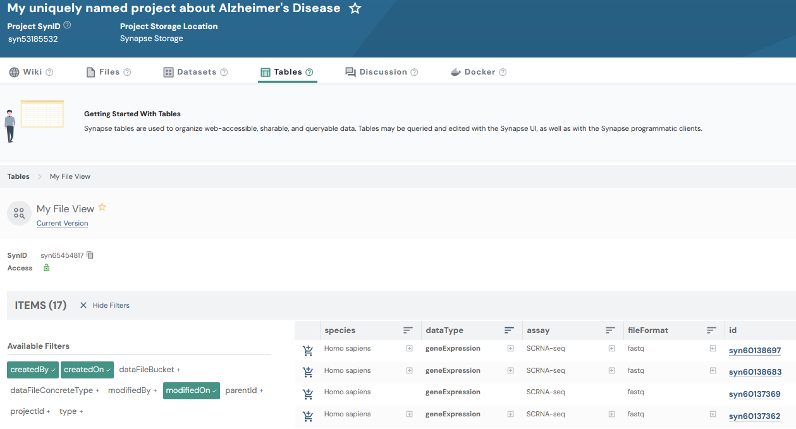

EntityViews
2026-10-02
entityview.RmdEntityViews
EntityViews in Synapse allow you to create a queryable view that provides a unified selection of entities stored in different locations within your Synapse project. This can be particularly useful for managing and querying metadata across multiple files, folders, or projects that you manage.
Views display rows and columns of information, and they can be shared and queried with SQL. Views are queries of other data already in Synapse. They allow you to see groups of entities including files, tables, folders, or datasets and any associated annotations about those items.
Annotations are an essential component to building a view. Annotations are labels that you apply to your data, stored as key-value pairs in Synapse. They help users search for and find data, and they are a powerful tool used to systematically group and describe things in Synapse.
This tutorial will follow a Flattened Data Layout. With a project that has this example layout:
.
└── single_cell_RNAseq_batch_1
├── SRR12345678_R1.fastq.gz
└── SRR12345678_R2.fastq.gz1. Find the Synapse ID of your project
First let’s set up some constants we’ll use in this script, and find the ID of our project
2. Create an EntityView with Columns
Now, we will create 4 columns to add to our EntityView. Recall that any data added to these columns will be stored as an annotation on the underlying File.
# Next let's add some columns to the EntityView, the data in these columns will end up
# being stored as annotations on the files
columns = list(
Column(name = "species", column_type = "STRING"),
Column(name = "dataType", column_type = "STRING"),
Column(name = "assay", column_type = "STRING"),
Column(name = "fileFormat", column_type = "STRING")
)Next we’re going to store what we have to Synapse and print out the
results. The view_type_mask is a bit mask of the entity
types to include in the view; 0x01L selects Files.
# Then we will create an EntityView that is scoped to the project, and will contain a row
# for each file in the project
view = EntityView(
name = "My Entity View",
parent_id = project_id,
scope_ids = list(project_id),
view_type_mask = 0x01L, # File
columns = columns
) |> synStore()
cat("My EntityView ID is:", view$id, "\n")
# When the columns are printed you'll notice that it contains a number of columns that
# are automatically added by Synapse in addition to the ones we added
names(view$columns)3. Query the EntityView
# Query the EntityView
results = synQuery(
query = sprintf(
"SELECT id, name, species, dataType, assay, fileFormat, path FROM %s WHERE path like '%%single_cell_RNAseq_batch_1%%'",
view$id
),
include_row_id_and_row_version = FALSE
)
resultsThe result of querying your File View should look like:
id name species dataType...
1 syn1 SRR12345678_R1.fastq.gz Homo sapiens geneExpression
2 syn2 SRR12345678_R2.fastq.gz Homo sapiens geneExpression4. Update rows in the EntityView
Now that we know the data is present in the EntityView, let’s go ahead and update the annotations on these Files. The following code sets all returned rows to a single value. Since the results were returned as a data frame you have many options to search through and set values on your data.
# Finally let's update the annotations on the files in the project
results$species = rep("Homo sapiens", nrow(results))
results$dataType = rep("geneExpression", nrow(results))
results$assay = rep("SCRNA-seq", nrow(results))
results$fileFormat = rep("fastq", nrow(results))
view |> synUpdateRows(
values = results,
primary_keys = list("id"),
wait_for_eventually_consistent_view = TRUE
)A note on wait_for_eventually_consistent_view:
EntityViews in Synapse are eventually consistent, meaning that updates
to data may take some time to be reflected in the view. The
wait_for_eventually_consistent_view flag allows the code to
pause until the changes are fully propagated to your EntityView. When
this flag is set to TRUE a query is automatically executed
on the view to determine if the view contains the updated changes. It
will allow your next query on your view to reflect any changes that you
made. Conversely, if this is set to FALSE, there is no
guarantee that your next query will reflect your most recent
changes.
5. Update the scope of your EntityView
As your project expands or contracts you will need to adjust the
containers you’d like to include in your view. In order to accomplish
this you may modify the scope_ids attribute on your
view.
6. Update the types of Entities included in your EntityView
You may also want to change what types of Entities may be included in
your view. To accomplish this you’ll be modifying the
view_type_mask attribute on your view.
# You may also need to add or remove the types of Entities that may show up in your view
# You will be able to specify multiple types using bitwOr(), or a single value
view$view_type_mask = bitwOr(0x01L, 0x08L) # File | Folder
# view$view_type_mask = 0x01L # File
view |> synStore()The possible types are: File=0x01,
Project=0x02, Table=0x04,
Folder=0x08, View=0x10,
Docker=0x20, SubmissionView=0x40,
Dataset=0x80, DatasetCollection=0x100,
MaterializedView=0x200.
Results
Now that you have created and updated your File View, you can inspect it in the Synapse web UI. It should look similar to:
